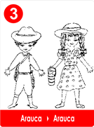
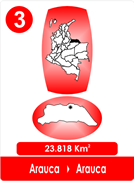

3 "La Plegaria de una Madre "Arauca"
- Consulta a Jesús
- Fábulas de Colombia
- Metodo Corima
- Arbol
- Flor
- Fruto
- Estrellas Pequeñas
- Nostradamus
- La Ruta del Sol
- Fabula de Corima
- Productos y Servicios
- Mensajeros Celestiales
- Juguemos
- Articulos
- Estrellas Humanas
- Herramientas
- Plantas Milagrosas
- Adorables Fechas
- Videos


Cuentan que una mujer llegó a la Región de Arauca, a pedirle al Chamán el curandero un brebaje muy especial.
-He recorrido la Patria buscando soluciones, ella me ha quitado a mis tres hijos, porque yo misma les enseñé a amarla y me pagó muy mal, los perdí y murieron sin poder vivir !Cometí ese pecado mortal!
-¿Y qué fué lo que pasó? Preguntó el Chamán.
- El mayor se vistió de verde, para defenderla de la guerra, el segundo se vistió de azul y fué el infante y el cubita pensó que había que protestar por las injusticias y se enroló de guerrillero! Y los tres perdieron, vengo de ponerles flores en sus tumbas.
! Ninguno ganó! ¡Ya todos están muertos!
-¿Y qué quieres que yo haga mujer?
-Que inventes un rezo, un hechizo, un brebaje, un ungüento como el que le pones al ganado para sacarle los nuches, porque ahora es la gente, la que los tiene!
El pobre Chamán se rascaba la cabeza. Y ella siguió;
No quiero que otras madres tengan la pena que tengo, copie mitos a lo antiguo, invoque a la Madremonte, invite el Mohan, ! Yo que se! Haga algo,
! Señor Chamán!
- Mis poderes no llegan a tanto mi buena Señora!
-¿Qué tal un conjuro, unos polvos mágicos para curar?
Usted es un buen curandero, mezcle más yerbas, es seguro que puede ayudar como en sus giras por el País, lo sé, lo dicen, su clientela de naipes, maras y adivinanzas.
! Ó! es que a usted le conviene que haya líos para ganar más dinero, como los militares? ¿Y de las pobres madres qué?
- Mujer, lo que hago es negocio, ¡de algo he de vivir!
Entonces gruesas lágrimas rodaron por las mejillas de la madre adolorida y continuó diciendo;
-Nadie ni los Sacerdotes, ni el Gobierno, ni los Chamanes pueden ayudar a las madres que dan sus hijos por la tal Patria, pero le dejo la inquietud, busque el remedio y yo misma voy y lo lanzo en los ríos, en los acueductos que sea un bebedizo que vuelva al hombre más bueno, como cuando eran niños, porque le aseguro, todos los niños nacen buenos, como los míos, pero los matan !
-¿OH Dios, no habrá algún jarabe, para hacer reaccionar a los que mandan las esperanzas a la tumba? ¿O un aerosol que se pueda echar, puro y transparente? Para que no maten a nuestros jóvenes y no lloren las Madres.
¡Y la madre de rodillas lloraba!